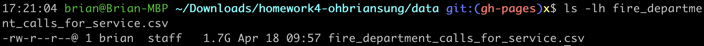
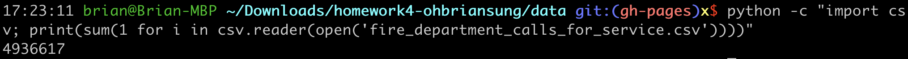
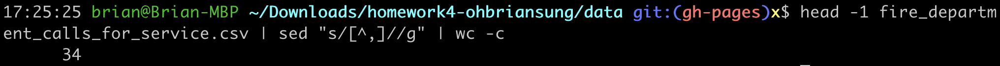

The dataset I used in this project was Fire Department Calls for Service sourced from data.sfgov.org . This project focused on visualizing Regions of incidents using hierarchical data visualization techniques in order to get a better understanding regarding the story underneath. I used Python3 for parsing the original data into json format that can be used by d3.stratify(), and I used D3.js version 5 for implementing the visualization. The font styles used in this website are powered by Google Fonts . This is an open source project, all the source code can be found here .
Source: data.sfgov.org
Licence: ODC Public Domain Dedication and Licence
Type: CSV
Date: 04/18/2019
| Attribution | Value | Sreenshot |
|---|---|---|
| Size (GB) | 1.7 |  |
| Rows | 49,366,176 |  |
| Columns | 34 |  |
| Data Types | String, Number, Datetime, Boolean, Location (Latitude and Longitude) | |
Data Processing:
Used python to filter unused columns and process each row to build a hierarchy with children and parents so it can be used by d3.stratify().
See source code here .
Used Columns:
| Column | Interpretation |
|---|---|
| City | City of incident. |
| Neighborhooods - Analysis Boundaries | Neighborhood District associated with this address. |
| Zipcode of Incident | Zipcode of incident. |
0. Java 11 API Hierarchy - Data Wrangling by Sophie Engle
1. Java 11 API Hierarchy - Visualization by Sophie Engle
| Done? | Letter | Justification |
|---|---|---|
| A+ | TBA |
Chien-Yu Sung
An enthusiastic and responsible man with ambition and creativity.
Capable of working as a dedicated team member as well as an independent initiative taker.
Proud Taiwanese!
Currently, a 2nd year Master student in Computer Science at University of San Francisco who is graduating on May 18, 2019.
[ Website ]
[ Interests ]
Distributed System
Site Reliability
Cybersecurity
Data Visualization
Board Games